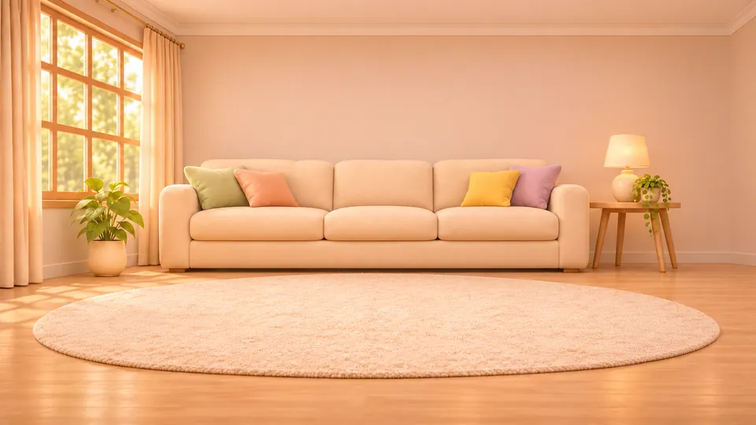
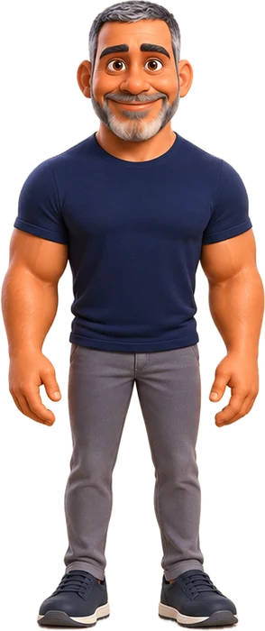

Sem susto
Som baixo, sem grito, buzina ou efeito estourando. Nada que acelere o coração de ninguém.
Quer uma música bem suave enquanto você passeia pelo site?

Para crianças de 1 a 4 anos
Histórias longas, lentas e sem susto, que terminam na hora certa e convidam a brincar. Quinze minutos sem culpa.
Toque nos puffs. Eles escrevem KIKICO e cantam.
Feito pensando em quem aperta o play
Sabemos como é a rotina: o jantar para fazer, a roupa para dobrar, a cabeça pedindo um minuto. O Mini Mundo foi desenhado para esse minuto valer a pena.
Som baixo, sem grito, buzina ou efeito estourando. Nada que acelere o coração de ninguém.
Planos longos: a imagem fica parada o tempo de a criança olhar de verdade e entender o que vê.
Começo, meio e fim. E, no fim, um convite gentil para desligar a tela e brincar junto.
Veja a diferença
Arraste a barra. À esquerda, o ritmo de muitos desenhos de tela. À direita, o ritmo do Mini Mundo.
Cada hora do dia tem um jeito

Mini Mundo do Kikico · estreia em breve
Episódios longos com Kikico, Nina e Tião. Dê o play, tome o café ainda quente e volte quando o final chegar.
Dica: sente ao lado nos primeiros minutos e comente o que aparece. Depois, a criança segue sozinha.
Os quinze minutos são seus também
Duas ferramentas pequenas para usar enquanto o desenho roda. Sem cadastro, sem anúncio.
Um minuto só para você.
Inspire pelo nariz por 4 segundos, solte devagar por 6. Repita.
Quando o desenho acabar
O Abecedário das Virtudes (em preparo) vai de A a Z. Escolha uma e tire uma pergunta simples para conversar com seu pequeno.
Quem brincou com o Kikico hoje? E com quem você brinca?
Quem mora nessa sala

Calmo e de braço aberto. Conta o que está vendo, espera o tempo do Kikico e é quem puxa o abraço no fim do dia.
Escuta, pergunta e abraça. Faz o dia caber numa história com começo, meio e fim.

Tem 2 anos e quer saber de tudo: rodas, bichos, chuva, o feijão que brota. Puxa os carrinhos por um barbante.

A cachorrinha sempre acesa, de lacinho lilás. Corre na frente e volta para ver se todo mundo vem junto.
O grandão de bandana. Desengonçado e sem pressa: senta, espera, observa. É quem ensina a calma.
Quem faz o Mini Mundo
O Mini Mundo do Kikico não saiu de uma grande produtora. Nasceu dentro de uma família que também precisa de meia hora de calma, e que também se preocupa com o que o filho assiste. Por isso cada passo, da história ao desenho, do som ao site, é pensado por pais, olhando para outros pais.
Quem decide o ritmo, o som e o final de cada episódio é quem também dá o jantar e conta a história de dormir.
Pensado para o seu dia: o carro, o café, o banho, a hora de desacelerar. Do jeito que a gente gostaria de encontrar.
Sem pressa, sem susto, sem rastreador. Só o que a gente colocaria na frente do nosso próprio filho.
Feito em família, com carinho, para famílias.
Antes de dar o play
Pensamos em crianças de 1 a 4 anos. Mas a regra de ouro é sua: você conhece o seu filho. Assista a um episódio junto e veja como ele reage.
O desenho foi feito para ser seguro e sem sustos, mas nada substitui a presença. Nos primeiros minutos, sente ao lado e comente. Depois, fique por perto.
A ideia é caber em torno de 15 minutos, com começo, meio e fim claros. No final, o próprio desenho convida a desligar e brincar.
Não, e não quer ser. Cada família decide o tempo de tela que faz sentido. O Mini Mundo existe para ser um complemento tranquilo, que termina e devolve a criança ao mundo real.
Não. Este site não usa cookies, rastreadores nem formulários. A música e as ferramentas rodam só no seu aparelho. A única coisa guardada é a sua escolha de ligar ou desligar o som.

Episódios longos no YouTube. Pedacinhos e conversa com os pais no Instagram.